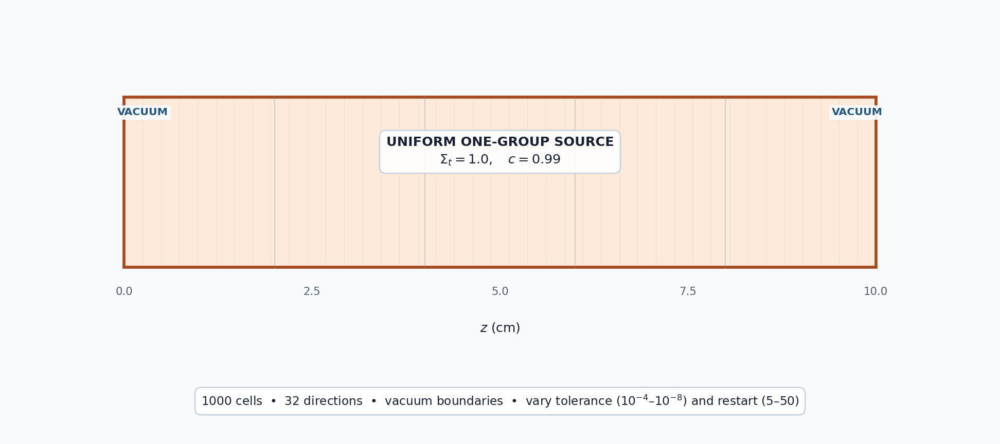

5.2.2. GMRES Convergence Controls

Goal: Show how the inner tolerance and restart interval affect GMRES accuracy, transport sweeps, and wall time.
5.2.2.1. Scattering slab
A finite slab with vacuum boundaries and a scattering ratio of 0.99 gives GMRES enough spatial error modes for its controls to matter. Every case uses the same 1000-cell mesh, 32-direction quadrature, and source. A tightly converged solve supplies the reference for comparing solver settings, and an independent analytic \(S_{32}\) solution checks that reference for correctness.
[ ]:
import numpy as np
from mpi4py import MPI
from pyopensn.aquad import GLProductQuadrature1DSlab
from pyopensn.context import Finalize
from pyopensn.mesh import OrthogonalMeshGenerator
from pyopensn.post import VolumePostprocessor
from pyopensn.solver import DiscreteOrdinatesProblem, SteadyStateSourceSolver
from pyopensn.source import VolumetricSource
from pyopensn.xs import MultiGroupXS
comm = MPI.COMM_WORLD
rank = comm.rank
def solve(tolerance, restart):
mesh = OrthogonalMeshGenerator(
node_sets=[[10.0 * i / 1000 for i in range(1001)]]
).Execute()
mesh.SetUniformBlockID(0)
xs = MultiGroupXS()
xs.CreateSimpleOneGroup(sigma_t=1.0, c=0.99)
quadrature = GLProductQuadrature1DSlab(
n_polar=32, scattering_order=0
)
problem = DiscreteOrdinatesProblem(
mesh=mesh,
num_groups=1,
groupsets=[
{
"groups_from_to": (0, 0),
"angular_quadrature": quadrature,
"inner_linear_method": "petsc_gmres",
"l_abs_tol": tolerance,
"l_max_its": 500,
"gmres_restart_interval": restart,
}
],
xs_map=[{"block_ids": [0], "xs": xs}],
volumetric_sources=[
VolumetricSource(block_ids=[0], group_strength=[1.0])
],
boundary_conditions=[
{"name": "zmin", "type": "vacuum"},
{"name": "zmax", "type": "vacuum"},
],
options={"verbose_inner_iterations": False},
)
solver = SteadyStateSourceSolver(problem=problem)
comm.Barrier()
start = MPI.Wtime()
solver.Initialize()
solver.Execute()
comm.Barrier()
elapsed = comm.allreduce(MPI.Wtime() - start, op=MPI.MAX)
average = VolumePostprocessor(problem=problem, value_type="avg")
average.Execute()
flux = sum(average.GetValue()[0])
return flux, solver.GetNumSweeps(), elapsed
5.2.2.2. Independent analytic reference
The tightly converged run shows only how cheaper GMRES settings compare with a stricter setting of the same discretization. To check the answer itself, we solve the same \(S_{32}\) equations analytically. In a homogeneous slab with isotropic scattering and a uniform source \(q\), the discrete-ordinates equations
form a linear system of ordinary differential equations with constant coefficients. The solution is the infinite-medium flux \(\phi_\infty=q/\sigma_a\) plus exponential modes of the homogeneous system. The vacuum conditions \(\psi_n(0)=0\) for \(\mu_n>0\) and \(\psi_n(L)=0\) for \(\mu_n<0\) fix the mode amplitudes, and integrating the modes exactly gives the slab-average scalar flux without spatial discretization error. The function below uses NumPy’s Gauss–Legendre rule (\(\sum_n w_n=2\)) rather than OpenSn’s quadrature, so the reference is independent of the code under test.
[ ]:
def analytic_slab_average(n_directions, sigma_t, c, q, length):
"""Slab-average scalar flux of the exact S_N solution with vacuum boundaries."""
mu, w = np.polynomial.legendre.leggauss(n_directions)
sigma_s = c * sigma_t
phi_infinite = q / (sigma_t - sigma_s)
# Exponential modes of the homogeneous system d(psi)/dx = A psi
A = (
-sigma_t * np.eye(n_directions)
+ 0.5 * sigma_s * np.outer(np.ones(n_directions), w)
) / mu[:, None]
lam, V = np.linalg.eig(A)
assert np.allclose(lam.imag, 0.0) and np.allclose(V.imag, 0.0)
lam, V = lam.real, V.real
# Anchor each mode at the boundary where it is largest to avoid overflow
x_anchor = np.where(lam > 0.0, length, 0.0)
x_boundary = np.where(mu > 0.0, 0.0, length)
boundary_matrix = V * np.exp(lam * (x_boundary[:, None] - x_anchor))
amplitudes = np.linalg.solve(
boundary_matrix, np.full(n_directions, -0.5 * phi_infinite)
)
mode_integrals = -np.expm1(-np.abs(lam) * length) / np.abs(lam)
return phi_infinite + (w @ V) @ (amplitudes * mode_integrals) / length
analytic_flux = analytic_slab_average(
n_directions=32, sigma_t=1.0, c=0.99, q=1.0, length=10.0
)
5.2.2.3. Vary tolerance and restart
The tolerance cases use a restart interval of 30. The restart cases use a tolerance of \(10^{-8}\). Sweep counts measure transport work; wall time is machine-dependent.
[ ]:
reference_flux, reference_sweeps, reference_time = solve(1.0e-10, 50)
cases = [
("Tolerance 1e-4", 1.0e-4, 30),
("Tolerance 1e-6", 1.0e-6, 30),
("Tolerance 1e-8", 1.0e-8, 30),
("Restart 5", 1.0e-8, 5),
("Restart 20", 1.0e-8, 20),
("Restart 50", 1.0e-8, 50),
]
results = {label: solve(tolerance, restart) for label, tolerance, restart in cases}
differences = {
label: abs(flux - reference_flux) / abs(reference_flux)
for label, (flux, _, _) in results.items()
}
reference_error = abs(reference_flux - analytic_flux) / analytic_flux
if rank == 0:
print(f"GMRES analytic S32 average flux={analytic_flux:.12e}")
print(f"GMRES reference relative error vs analytic={reference_error:.12e}")
print(f"GMRES reference total average flux={reference_flux:.12e}")
print(f"GMRES reference sweeps={reference_sweeps}")
print(f"GMRES reference wall time (s)={reference_time:.6f}")
for label, _, _ in cases:
flux, sweeps, elapsed = results[label]
print(f"GMRES {label} relative flux difference={differences[label]:.12e}")
print(f"GMRES {label} sweeps={sweeps}")
print(f"GMRES {label} wall time (s)={elapsed:.6f}")
assert reference_error < 1.0e-7
assert max(differences.values()) < 1.0e-3
assert results["Tolerance 1e-4"][1] <= results["Tolerance 1e-8"][1]
A representative one-process run gives:
Case |
Relative flux difference |
Sweeps |
Wall time (s) |
|---|---|---|---|
Reference (\(10^{-10}\), restart 50) |
0 |
17 |
0.0183 |
Tolerance \(10^{-4}\) |
\(3.74\times10^{-9}\) |
11 |
0.0119 |
Tolerance \(10^{-6}\) |
\(1.40\times10^{-11}\) |
13 |
0.0136 |
Tolerance \(10^{-8}\) |
\(1.34\times10^{-13}\) |
15 |
0.0155 |
Restart 5 |
\(1.52\times10^{-9}\) |
41 |
0.0418 |
Restart 20 |
\(1.34\times10^{-13}\) |
15 |
0.0157 |
Restart 50 |
\(1.34\times10^{-13}\) |
15 |
0.0158 |
Tighter tolerances require more sweeps. A restart interval of 5 discards useful Krylov information and nearly triples the work relative to intervals of 20 or 50. Exact timings depend on the machine.
The analytic \(S_{32}\) slab-average flux is 25.87632598208. The reference run differs from it by a relative \(5.84\times10^{-9}\), which is spatial discretization error: refining the mesh from 125 to 2000 cells reduces this difference by a factor approaching eight per halving of the cell width, consistent with third-order convergence of the cell-averaged flux. The notebook requires agreement within \(10^{-7}\), above this discretization error and the \(10^{-10}\) solver tolerance but far below the error a wrong source normalization, cross section, or boundary condition would produce.
5.2.2.4. Finalize (for Jupyter Notebook only)
In script mode, PyOpenSn handles finalization automatically. In a Jupyter kernel, finalize OpenSn before MPI.
[ ]:
if "opensn_console" not in globals():
from IPython import get_ipython
if get_ipython() is not None:
Finalize()
MPI.Finalize()